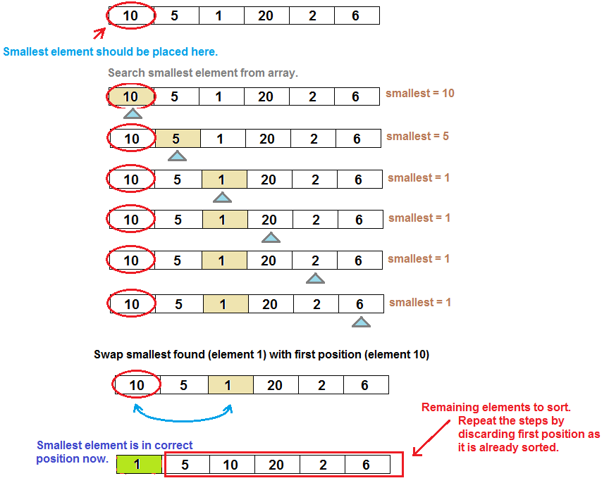

Selection Sort is very basic and easy sorting algorithm to understand and implement.
Selection sort works
- Finding smallest element from the array and.
- Replace the smallest element found to first position in array.
- Once the smallest element is found and placed at first position, Now task is to place 2nd smallest element in the second position.
- For finding the 2nd smallest element, we will repeat the same process and find smallest element but this time we will not include FIRST position in searching smallest number.

Selection sort Time Complexity Analysis
- Best Case : O(n)^2
- Worst Case : O(n)^2
- Average Case : O(n)^2
- Worst Case Space Complexity : O(1)
- Stable : No
Why is Selection sort faster than Bubble sort?
- When using Selecting sort it swaps elements "n" times in worst case, but Bubble sort swaps almost n*(n-1) times. We all know, Reading time is less than writing time even in-memory
- If we have a system where write operations are extremely expensive and read operations are not, then Selection sort could be ideal.
- Selection sort is good for sorting arrays of small size.
- Selection sort is better than Bubble sort due to less swapping required.
- In Bubble sort, we can identify whether list is sorted or not in 1st iteration but in Selection sort we can't able to identify that. Compared to Selection sort, Bubble sort should be used when the given array is almost sorted.
- Step 1 − Set MIN to location 0
- Step 2 − Search the minimum element in the list
- Step 3 − Swap with value at location MIN
- Step 4 −Increment MIN to point to next element
- Step 5 − Repeat until list is sorted
Note:
ALGORITHM
Program to implement Selection Sort
// C program implementing Selection Sort
#include<stdio.h>